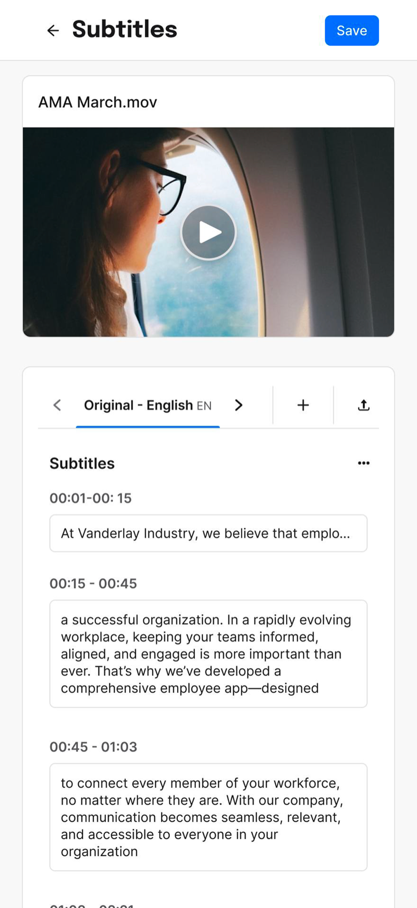
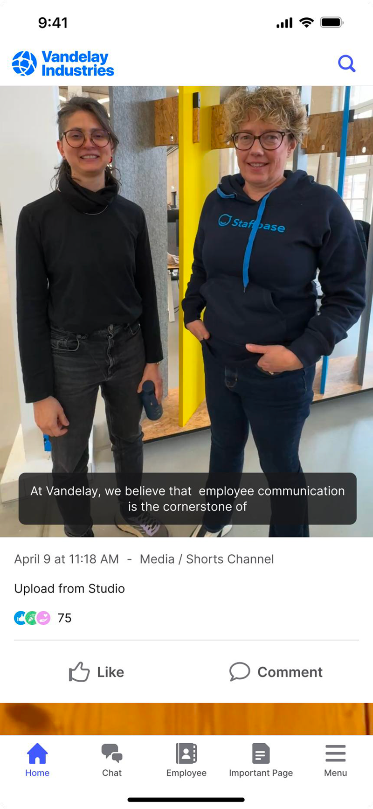

Overview
An AI-powered feature that automates subtitle generation for uploaded videos, integrated with Microsoft Azure. I designed the end-to-end subtitle management interface, from generation to editing and publishing, balancing two perspectives: the editor’s need to review and correct the AI-generated output, and the end user’s experience of seeing accurate, well-timed subtitles in the app.
Throughout, I kept a strong focus on accessibility, making sure video content reaches everyone regardless of hearing ability or language, while keeping the content creator in control.


While the full case study is still in progress, you can see the feature live here:
See it live →